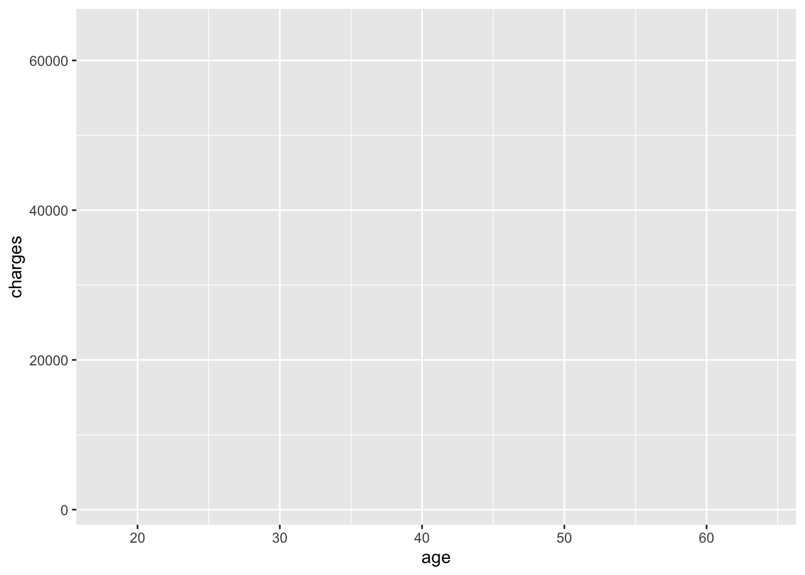
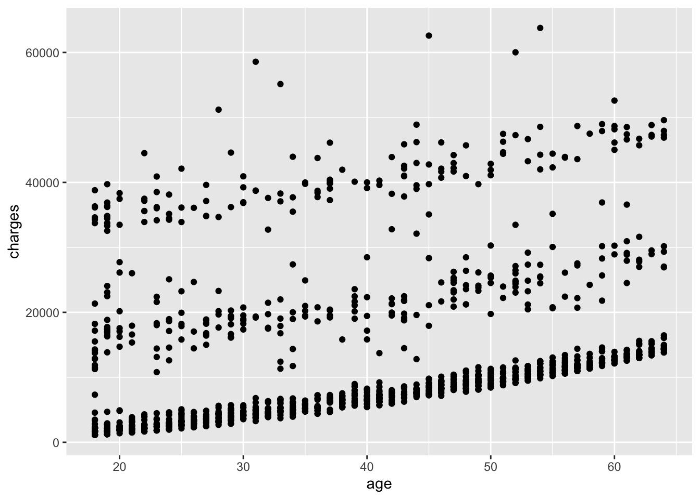
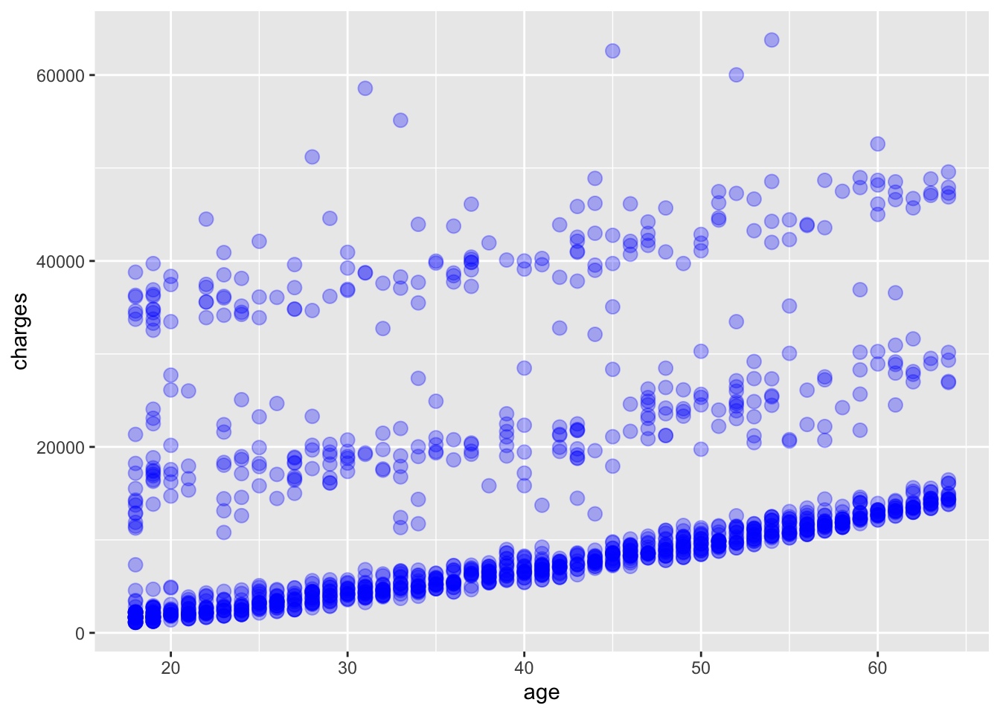
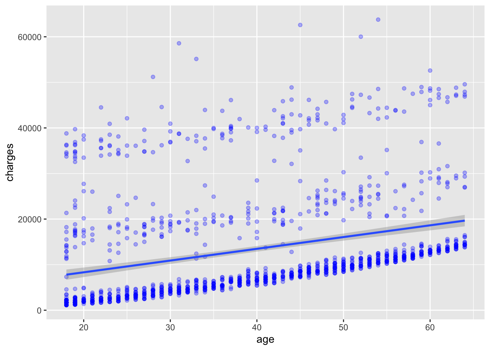
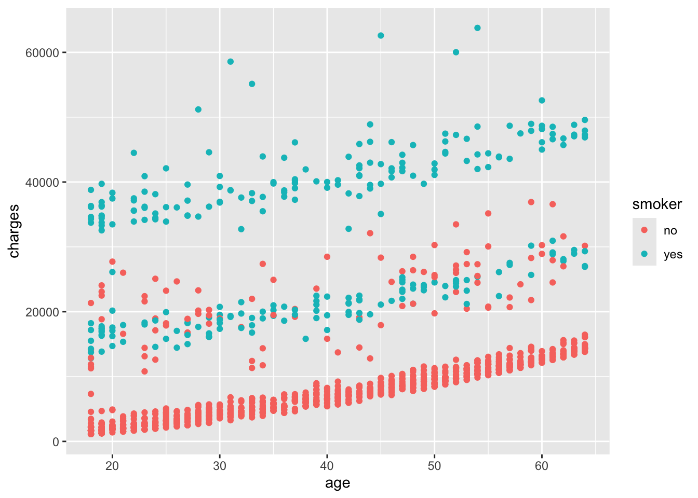
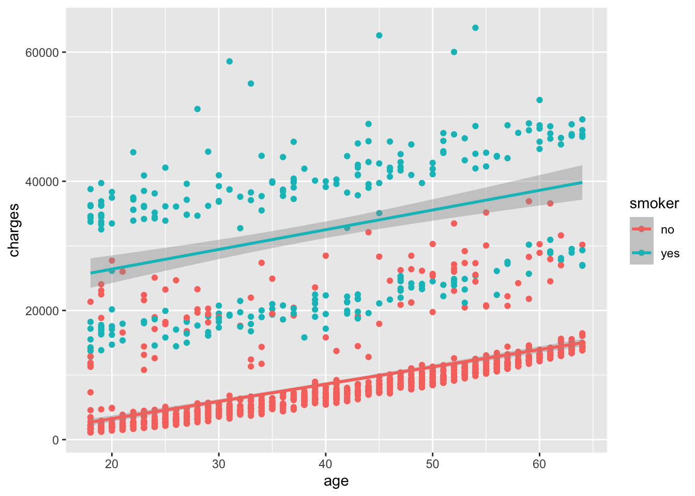
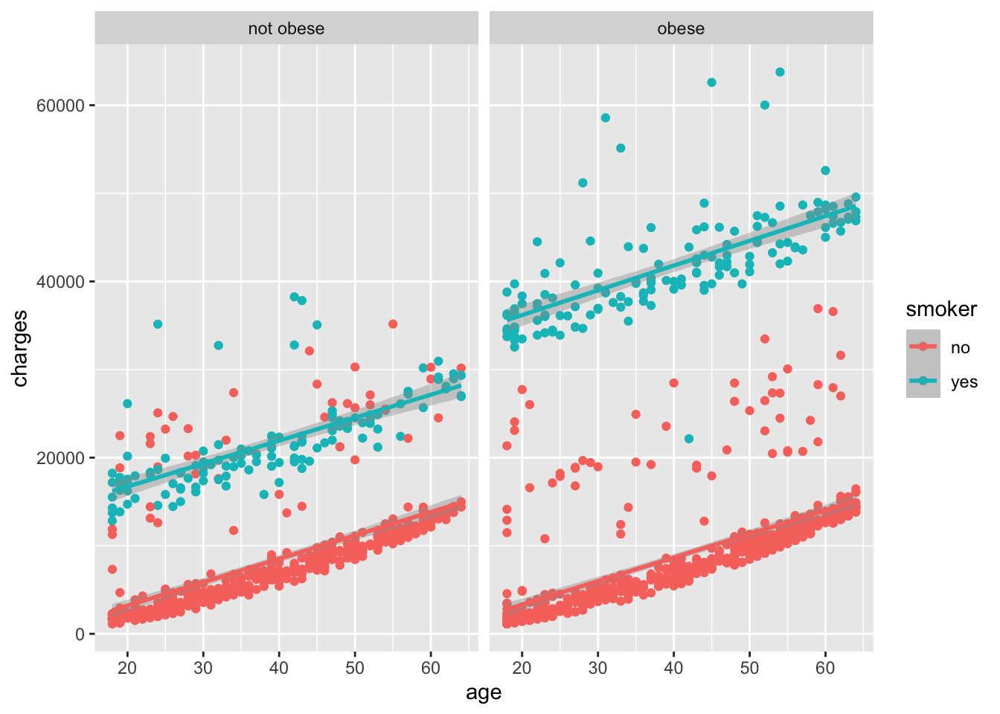
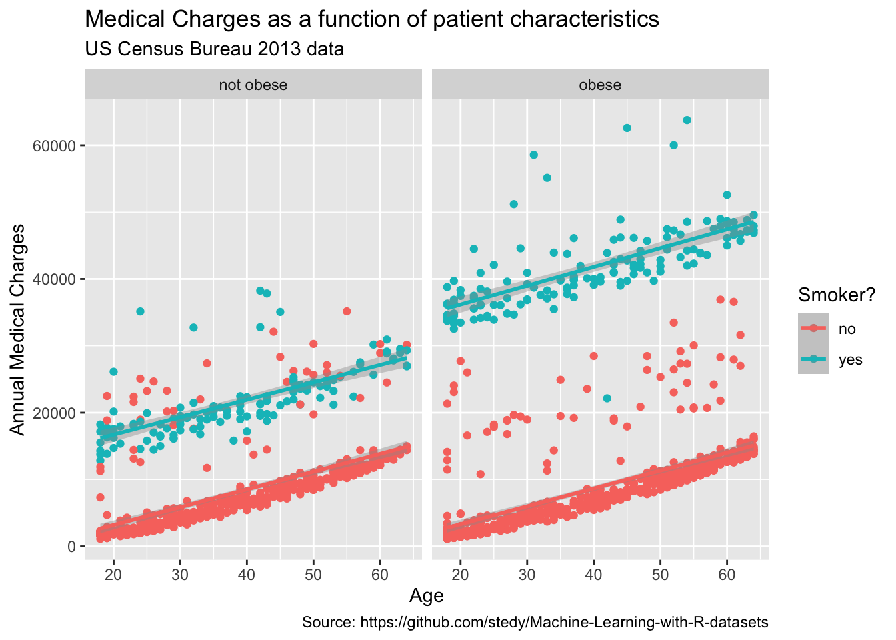
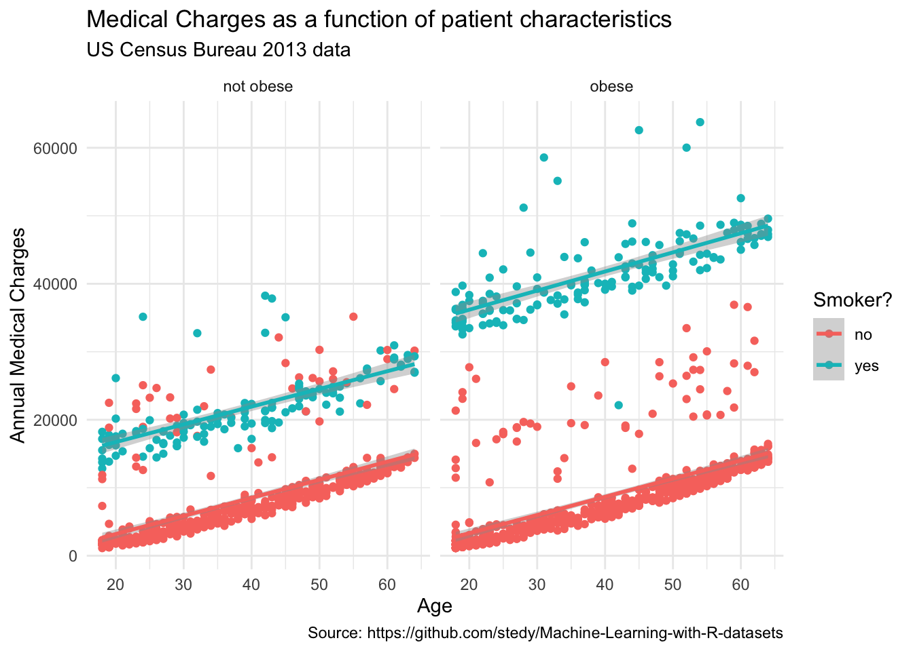

insurance_url <- "https://raw.githubusercontent.com/stedy/Machine-Learning-with-R-datasets/master/insurance.csv"
insurance <- read.csv(insurance_url)6 Plotting with ggplot2
The ggplot2 package is a popular data visualization package in R. It is based on the Grammar of Graphics, a general scheme for data visualization that breaks up graphs into semantic components such as scales and layers. The Grammar of Graphics was developed by Leland Wilkinson in 1999 and is implemented in the ggplot2 package by Hadley Wickham.
The Grammar of Graphics is a powerful framework for creating complex visualizations by combining simple components. Figure 6.1 illustrates the layered components of a data visualization, each contributing to the final plot. Each layer builds upon the previous one, though not all layers are required for every plot.
The ggplot2 package provides a flexible and intuitive interface for creating a wide range of visualizations, from simple scatter plots to complex multi-layered plots.

This chapter provides an overview of the ggplot2 package and its implementation of the Grammar of Graphics. We will cover the basic components of a ggplot2 plot, including data, aesthetics, geometries, and themes.
6.1 Data
The first step in creating a ggplot2 plot is to specify the data to be visualized. The data should be in a tidy format (Wickham (2014)), with each row representing an observation and each column representing a variable. The insurance dataset is described in the book Machine Learning with R by Brett Lantz. The dataset describes medical information and costs billed by health insurance companies for 1338 individuals in 2013, as compiled by the United States Census Bureau.
Variables include:
- age
- age of primary beneficiary
- sex
- insurance contractor gender, female, male
- bmi
- Body mass index, providing an understanding of body, weights that are relatively high or low relative to height, objective index of body weight (kg / m ^ 2) using the ratio of height to weight, ideally 18.5 to 24.9
- children
- Number of children covered by health insurance / Number of dependents
- smoker
- Smoking status
- region
- the beneficiary’s residential area in the US, northeast, southeast, southwest, northwest.
- charges
- Individual medical costs billed by health insurance
We will load the data directly from the web, but you can also download the data from the link at github1.
1 Insurance data csv file, https://raw.githubusercontent.com/stedy/Machine-Learning-with-R-datasets/master/insurance.csv
Explore the dataset a bit to understand its structure and contents. For example, you can use the head() function to view the first few rows of the dataset.
head(insurance) age sex bmi children smoker region charges
1 19 female 27.900 0 yes southwest 16884.924
2 18 male 33.770 1 no southeast 1725.552
3 28 male 33.000 3 no southeast 4449.462
4 33 male 22.705 0 no northwest 21984.471
5 32 male 28.880 0 no northwest 3866.855
6 31 female 25.740 0 no southeast 3756.622And you can examine the dimensions of the dataset using the dim(), which returns the number of rows and columns in the dataset, the ncol() function, which returns the number of columns, and the nrow() function, which returns the number of rows.
Note that with the dim() function, the number of rows is given first, followed by the number of columns.
Notice that, while the BMI variable represents a measure of a person’s weight relative to their height, there is no discrete variable for whether a person is obese or not. The World Health Organization (WHO) defines obesity as a BMI greater than or equal to 30. We can create a new variable, obese, that indicates whether a person is obese based on their BMI.
insurance$obese <- ifelse(insurance$bmi >= 30, "obese", "not obese")If we examine the dataset again, we can see that the new variable obese has been added to the dataset.
head(insurance) age sex bmi children smoker region charges obese
1 19 female 27.900 0 yes southwest 16884.924 not obese
2 18 male 33.770 1 no southeast 1725.552 obese
3 28 male 33.000 3 no southeast 4449.462 obese
4 33 male 22.705 0 no northwest 21984.471 not obese
5 32 male 28.880 0 no northwest 3866.855 not obese
6 31 female 25.740 0 no southeast 3756.622 not obese6.2 Aesthetics
The next step in creating a ggplot2 plot is to specify the aesthetics of the plot. Aesthetics are visual properties of the plot that map data to visual elements.
# specify dataset and mapping
library(ggplot2)
ggplot(
data = insurance,
mapping = aes(x = age, y = charges)
)

In the code above, the data are the data to be visualized, and the mapping specifies how the data should be mapped to the plot. In this case, the x aesthetic is mapped to the age variable, and the y aesthetic is mapped to the charges variable. Note that there are no data displayed in Figure 6.2 yet; we have only specified the data and aesthetics. However, you can see the structure of the plot in the output, which shows the data and aesthetics that have been specified with age on the x-axis and charges on the y-axis.
6.3 Geometries
The next step is to add a geometry to the plot. Geometries are the visual representations of the data, such as points, lines, or bars. Since this is a scatter plot, we will use the geom_point() function to add points to the plot.
# add points to the plot
ggplot(
data = insurance,
mapping = aes(x = age, y = charges)
) +
geom_point()

Note
When using ggplot2, the + operator is used to add layers to the plot. The ggplot() function specifies the data and aesthetics, and the geom_point() function adds points to the plot. Using the + operator is a common practice in ggplot2 to add layers to a plot, but the + operator does not work for other types of plots in R.
Using other geometries, you can create different types of plots. For example, you can use geom_line() to create a line plot, geom_bar() to create a bar plot, or geom_boxplot() to create a box plot. Before doing so here, ask yourself if those geometries would be appropriate for the data you are working with.
A number of parameters (options) can be specified in a geom_ function. Options for the geom_point() function include color, size, and alpha. These control the point color, size, and transparency, respectively. Transparency ranges from 0 (completely transparent) to 1 (completely opaque). Adding a degree of transparency can help visualize overlapping points such as in Figure 6.4.
# add points to the plot
ggplot(
data = insurance,
mapping = aes(x = age, y = charges)
) +
geom_point(
color = "blue",
size = 3,
alpha = 0.3
)

We can add a best fit line to the scatter plot using the geom_smooth() function. The method parameter specifies the method used to fit the line. In this case, we will use the default method, which is linear regression, specified by method = "lm". The lm method fits a linear model to the data, which in this case is simple linear regression 2 of the dependent variable charges as a function of the independent variable age. The result is shown in Figure 6.5.
2 The linear regression model is of the form \(charges = \alpha + \beta * age + \epsilon\) where \(\alpha\) is the intercept, \(\beta\) is the slope, and \(\epsilon\) is the “error”.
# add points and a best fit line to the plot
ggplot(
data = insurance,
mapping = aes(x = age, y = charges)
) +
geom_point(
color = "blue",
alpha = 0.3
) +
geom_smooth(method = "lm")`geom_smooth()` using formula = 'y ~ x'

What do you observe in Figure 6.5 with the best fit line? How well does the line fit the data? Do you think a linear model is appropriate for this data?
6.4 Grouping
In addition to mapping variables to the x and y axes [i.e., aes(x = ..., y=...)], variables can be mapped to the color, shape, size, transparency, and other visual characteristics of geometric objects. This allows groups of observations to be superimposed in a single graph.
For example, we can map the smoker variable to the color of the points in the scatter plot. The result is shown in Figure 6.6.
# add points to the plot, colored by the smoker variable
ggplot(
data = insurance,
mapping = aes(x = age, y = charges, color = smoker)
) +
geom_point()

In Figure 6.6, the points are colored based on the smoker variable, with smokers in orange and non-smokers in blue. This allows us to visually compare the charges of smokers and non-smokers as a function of age.
If we add back in the best fit line, we can see how the relationship between age and charges differs between smokers and non-smokers. The result is shown in Figure 6.7.
# add points to the plot, colored by the smoker variable, and a best fit line
ggplot(
data = insurance,
mapping = aes(x = age, y = charges, color = smoker)
) +
geom_point() +
geom_smooth(method = "lm")`geom_smooth()` using formula = 'y ~ x'

How well does the best fit line fit the data for smokers and non-smokers? Do you see any differences in the relationship between age and charges for smokers and non-smokers?
6.5 Facets
Facets are a way to create multiple plots based on the levels of a categorical variable. In other words, facets allow you to create a grid of plots, with each plot showing a different subset of the data based on the levels of a categorical variable.
In Figure 6.7, we noticed that there are still two groups of points, even when looking at just smokers. We can further separate the data by the obese variable, creating a grid of plots with one plot for each combination of smoker and obese status.
# add points to the plot, colored by the smoker variable, and faceted by the obese variable
ggplot(
data = insurance,
mapping = aes(x = age, y = charges, color = smoker)
) +
geom_point() +
geom_smooth(method = "lm") +
facet_wrap(~obese)`geom_smooth()` using formula = 'y ~ x'

The way that we interpret the facet_wrap(~ obese) command is that we want to create a grid of plots, with each plot showing a different subset of the data based on the levels of the obese variable. In this case, we have two levels of the obese variable: obese and not obese, so we get two plots in the grid.
6.6 Labels
Labels are an important part of any plot. They help the viewer understand what the plot is showing and what the axes represent. While our plot already has labels for the x and y axes, we can add a title to the plot and change the labels for the x and y axes to make them more descriptive.
# add points to the plot, colored by the smoker variable, faceted by the obese variable, and add labels
ggplot(
data = insurance,
mapping = aes(x = age, y = charges, color = smoker)
) +
geom_point() +
geom_smooth(method = "lm") +
facet_wrap(~obese) +
labs(
title = "Medical Charges as a function of patient characteristics",
subtitle = "US Census Bureau 2013 data",
caption = "Source: https://github.com/stedy/Machine-Learning-with-R-datasets",
x = "Age",
y = "Annual Medical Charges",
color = "Smoker?"
)`geom_smooth()` using formula = 'y ~ x'

6.7 Themes
Themes are a way to control the non-data ink in a plot, such as the background color, grid lines, and text size. Rather than specifying each element individually, you can use a pre-defined theme to quickly style your plot. For a nice overview of themes in ggplot2, see the the ggplot2 themes gallery.
To create a more visually appealing plot, we can apply the theme_minimal() theme to our plot. This theme removes the background grid lines and adds a light gray background to the plot.
# add points to the plot, colored by the smoker variable, faceted by the obese variable, add labels, and apply a minimal theme
ggplot(
data = insurance,
mapping = aes(x = age, y = charges, color = smoker)
) +
geom_point() +
geom_smooth(method = "lm") +
facet_wrap(~obese) +
labs(
title = "Medical Charges as a function of patient characteristics",
subtitle = "US Census Bureau 2013 data",
caption = "Source: https://github.com/stedy/Machine-Learning-with-R-datasets",
x = "Age",
y = "Annual Medical Charges",
color = "Smoker?"
) +
theme_minimal()`geom_smooth()` using formula = 'y ~ x'

6.8 Saving a Plot
Once you have created a plot that you are happy with, you may want to save it to a file for use in a report or presentation. The ggsave() function in ggplot2 allows you to save a plot to a file in a variety of formats, including PNG, PDF, and SVG. Take a look at the help for ggsave() to see the available options. In particular, you can specify the file name, width, height, and resolution of the saved plot.
# save the plot to a file
ggsave("insurance_plot.png")Saving 7 x 5 in image
`geom_smooth()` using formula = 'y ~ x'References
Bourgon, Richard, Robert Gentleman, and Wolfgang Huber. 2010.
“Independent Filtering Increases Detection Power for
High-Throughput Experiments.” Proceedings of the National
Academy of Sciences 107 (21): 9546–51. https://doi.org/10.1073/pnas.0914005107.
Brouwer-Visser, Jurriaan, Wei-Yi Cheng, Anna Bauer-Mehren, Daniela
Maisel, Katharina Lechner, Emilia Andersson, Joel T. Dudley, and
Francesca Milletti. 2018. “Regulatory T-Cell
Genes Drive Altered
Immune Microenvironment in Adult
Solid Cancers and Allow for
Immune Contextual Patient
Subtyping.” Cancer Epidemiology, Biomarkers
& Prevention 27 (1): 103–12. https://doi.org/10.1158/1055-9965.EPI-17-0461.
Buenrostro, Jason D, Paul G Giresi, Lisa C Zaba, Howard Y Chang, and
William J Greenleaf. 2013. “Transposition of Native Chromatin for
Fast and Sensitive Epigenomic Profiling of Open Chromatin, DNA-binding Proteins and Nucleosome
Position.” Nature Methods 10 (12): 1213–18. https://doi.org/10.1038/nmeth.2688.
Buenrostro, Jason D, Beijing Wu, Howard Y Chang, and William J
Greenleaf. 2015. “ATAC-seq: A Method
for Assaying Chromatin Accessibility Genome-Wide.”
Current Protocols in Molecular Biology / Edited by Frederick M.
Ausubel ... [Et Al.] 109 (January): 21.29.1–9. https://doi.org/10.1002/0471142727.mb2129s109.
Caron, Stéphane. 2018. “The Grammar of Graphics.” https://dotlayer.org/en/grammar-of-graphics/.
Crawford, Gregory E, Sean Davis, Peter C Scacheri, Gabriel Renaud,
Mohamad J Halawi, Michael R Erdos, Roland Green, Paul S Meltzer, Tyra G
Wolfsberg, and Francis S Collins. 2006. “DNase-chip: A High-Resolution Method to Identify
DNase I Hypersensitive Sites Using Tiled
Microarrays.” Nature Methods 3 (7): 503–9. http://www.ncbi.nlm.nih.gov/pubmed/16791207?dopt=AbstractPlus.
Crawford, Gregory E, Ingeborg E Holt, James Whittle, Bryn D Webb, Denise
Tai, Sean Davis, Elliott H Margulies, et al. 2006. “Genome-Wide
Mapping of DNase Hypersensitive Sites Using Massively
Parallel Signature Sequencing (MPSS).” Genome
Research 16 (1): 123–31. http://www.ncbi.nlm.nih.gov/pubmed/16344561?dopt=AbstractPlus.
DeRisi, J. L., V. R. Iyer, and P. O. Brown. 1997. “Exploring the
Metabolic and Genetic Control of Gene Expression on a Genomic
Scale.” Science (New York, N.Y.) 278 (5338): 680–86. https://doi.org/10.1126/science.278.5338.680.
Greener, Joe G., Shaun M. Kandathil, Lewis Moffat, and David T. Jones.
2022. “A Guide to Machine Learning for Biologists.”
Nature Reviews Molecular Cell Biology 23 (1): 40–55. https://doi.org/10.1038/s41580-021-00407-0.
Knowles, Malcolm S., Elwood F. Holton, and Richard A. Swanson. 2005.
The Adult Learner: The Definitive Classic in Adult Education and
Human Resource Development. 6th ed. Amsterdam ; Boston: Elsevier.
Lawrence, Michael, Wolfgang Huber, Hervé Pagès, Patrick Aboyoun, Marc
Carlson, Robert Gentleman, Martin T Morgan, and Vincent J Carey. 2013.
“Software for Computing and Annotating Genomic Ranges.”
PLoS Computational Biology 9 (8): e1003118. https://doi.org/10.1371/journal.pcbi.1003118.
Libbrecht, Maxwell W., and William Stafford Noble. 2015. “Machine
Learning Applications in Genetics and Genomics.” Nature
Reviews Genetics 16 (6): 321–32. https://doi.org/10.1038/nrg3920.
Morgan, Martin, Herve Pages, V Obenchain, and N Hayden. 2016.
“Rsamtools: Binary Alignment (BAM), FASTA, Variant Call (BCF), and
Tabix File Import.” R Package Version 1 (0): 677–89.
Student. 1908. “The Probable Error of a
Mean.” Biometrika 6 (1): 1–25. https://doi.org/10.2307/2331554.
Tsompana, Maria, and Michael J Buck. 2014. “Chromatin
Accessibility: A Window into the Genome.” Epigenetics &
Chromatin 7 (1): 33. https://doi.org/10.1186/1756-8935-7-33.
Wickham, Hadley. 2014. “Tidy Data.” Journal of
Statistical Software, Articles 59 (10): 1–23. https://doi.org/10.18637/jss.v059.i10.